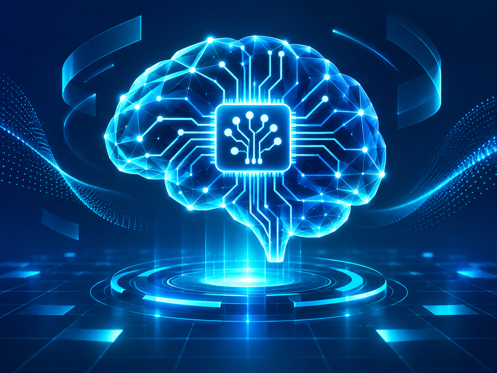
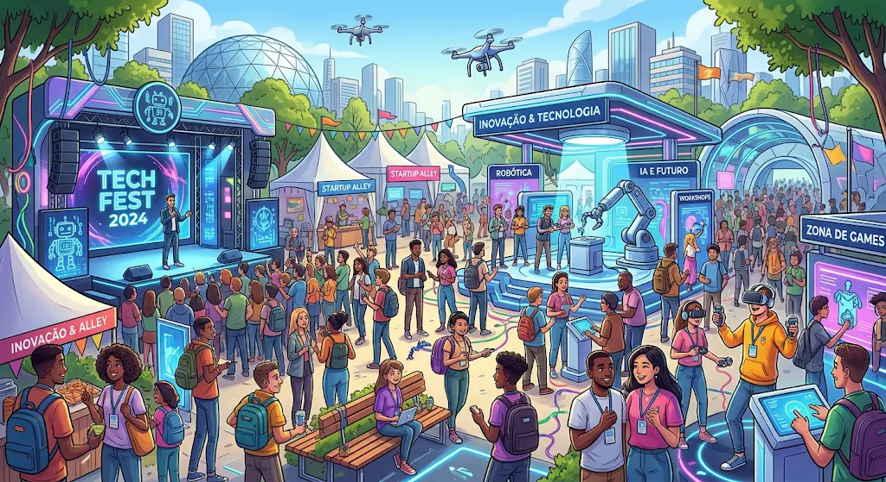
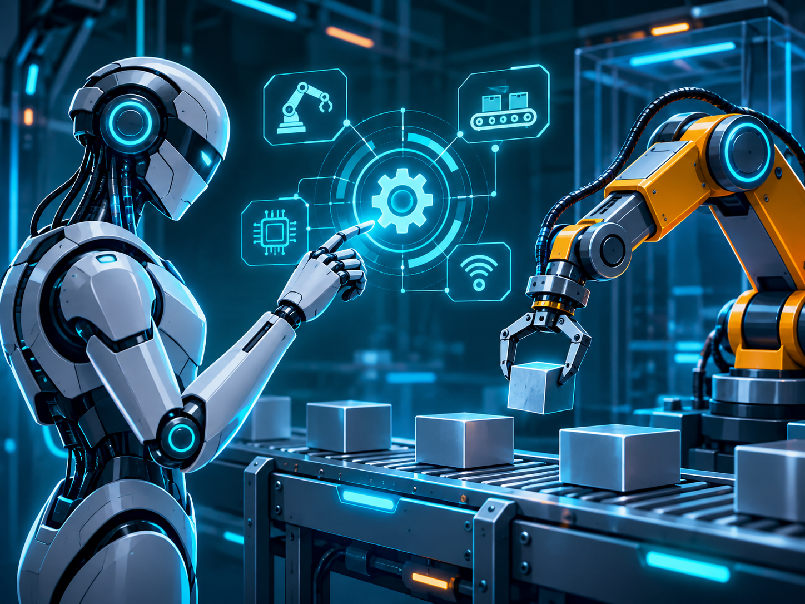
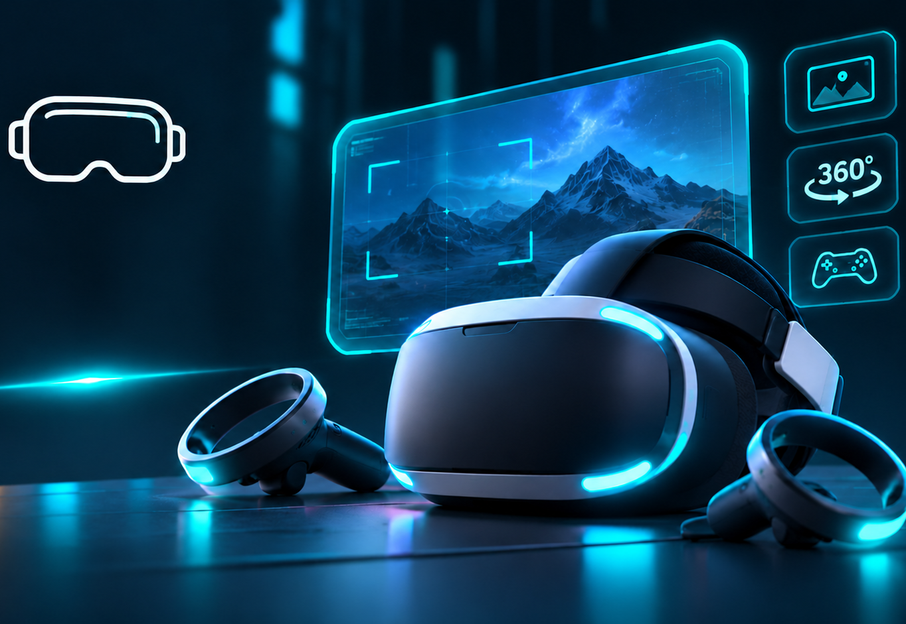
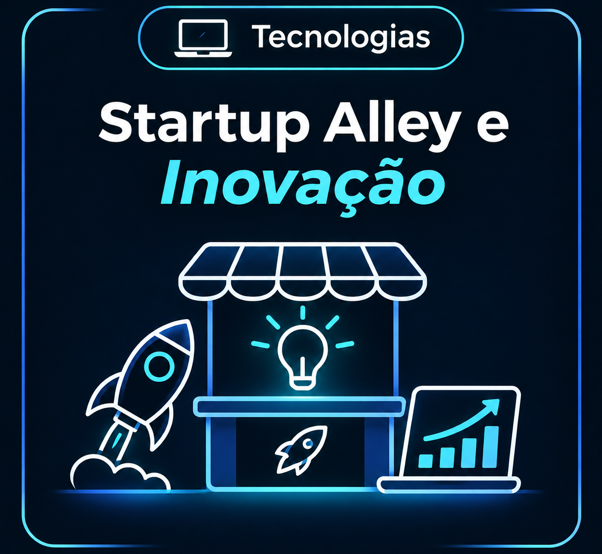

Demonstrações práticas de criação de textos, imagens, códigos e assistentes virtuais inteligentes.
Prepare-se para uma experiência incrível no mundo da tecnologia! Explore as últimas tendências em inteligência artificial, robótica, realidade virtual, games e inovação. Descubra novas possibilidades, participe de experiências interativas e conecte-se com o futuro.


Demonstrações práticas de criação de textos, imagens, códigos e assistentes virtuais inteligentes.

Exposição de braços robóticos, drones autônomos e soluções industriais de ponta.

Experiências imersivas com óculos VR, simuladores interativos e ambientes digitais 3D.
Desafios de hacking ético, proteção de dados e segurança na era da computação em nuvem.
Torneios ao vivo, testes de jogos independentes e equipamentos de alta performance.

Espaço dedicado a novas empresas de tecnologia, pitches para investidores e networking.
O TechFest é um evento dedicado à tecnologia, inovação e criatividade, reunindo experiências interativas e atrações para quem deseja conhecer o futuro tecnológico. Explore o mundo da inteligência artificial, robótica, realidade virtual, cibersegurança e games, descubra novas tendências e participe de atividades que conectam conhecimento, diversão e inovação.